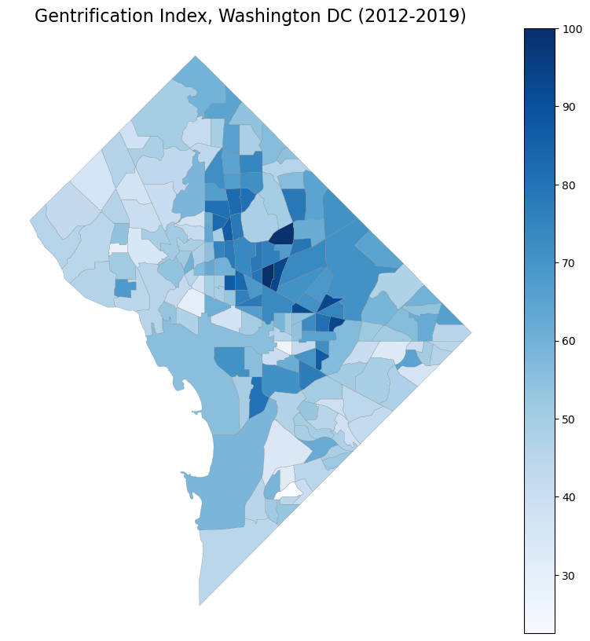
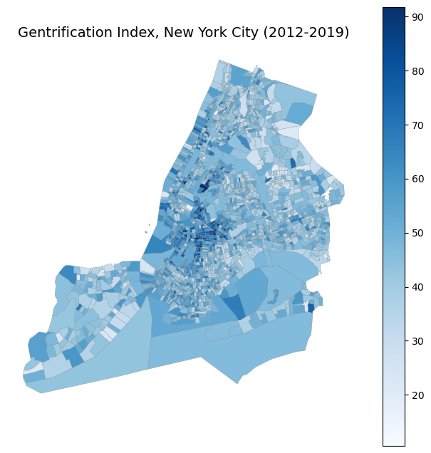
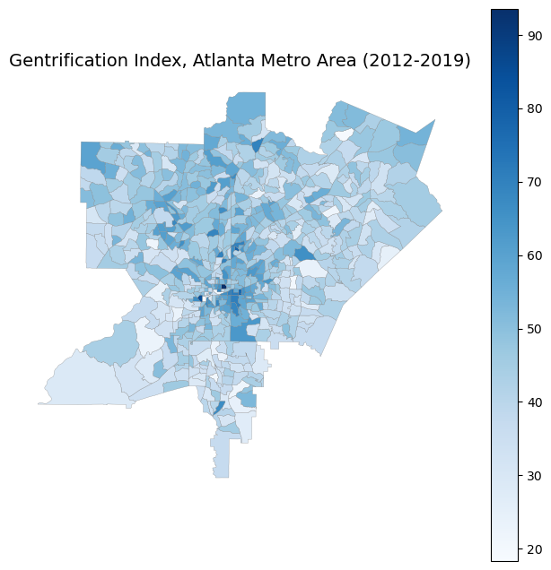
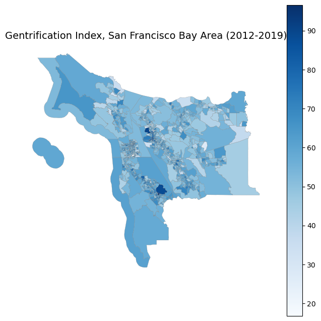

# Load Packages
import numpy as np
import pandas as pd
import censusdata
import geopandas as gpd
import json
import os
import time
from sklearn.preprocessing import StandardScaler
from sklearn.decomposition import PCA
import geopandas as gpd
import matplotlib.pyplot as pltCreating a Gentrification Index
This notebook documents the methodology used to construct a census tract-level gentrification index for the United States. Our goal is to measure the extent to which neighborhoods exhibit the demographic, socioeconomic, and housing-market changes typically associated with gentrification, following established approaches in the academic and policy literature.
We begin by selecting a set of core indicators from the U.S. Census Bureau’s American Community Survey (ACS) 5-year estimates. These variables were chosen based on prior research that consistently identified them as markers of neighborhood change and gentrification. The indicators include:
- Median household income
- Median gross rent
- Median home value
- white population
- recent residential mobility
- New housing stock
- Share of young adults
- Share of highly educated adults
Since gentrification is inherently a temporal process, we compute changes in each variable rather than relying on cross-sectional values alone. Specifically, we retrieve ACS data for 2012 and 2019, and calculate the change for each indicator at the census-tract level.
To combine these features into a single metric, we apply Principal Component Analysis (PCA) to the set of differenced variables. PCA identifies the dominant pattern of covariation across indicators. If a census tract experienced consistent increases in income, rent, educational attainment, new housing stock, and related variables, the first principal component will capture this shared direction of change. We interpret this component as the gentrification index.
This program is divided into three parts:
- Downloading ACS data for selected variables and years
- Cleaning and processing the data
- Constructing the gentrification index using PCA and scaling the results for interpretability.
Downloading Census Data
This section pulls in census data from the 5-year American Community Survey (ACS).
Define Variables to Download
These variables were chosen as they were mentioned in a variety of academic articles such as Freeman (2005), Chapple & Zuk (2016), Yoo (2023), etc.
# Define gentrification index vars
gentrification_vars = {
# Median Income
"B19013_001E" : "med_income",
# Median Gross Rent
"B25064_001E" : "med_rent",
# Median Home Value
"B25077_001E" : "med_hv",
# Percent of population that is white
"B03002_003E" : "pop_white",
"B03002_001E" : "pop_tot_race",
# Percent of population that moved to the tract within the past year
"B07003_001E" : "pop_tot_over1",
"B07003_007E" : "pop_mv_scty", # Moved within same county
"B07003_010E" : "pop_mv_dcty_sst", # Moved from diff county within state
"B07003_013E" : "pop_mv_dst", # Moved from diff state
# New housing stock
"B25034_001E" : "struct_tot", # Total number of structures
"B25034_003E" : "struct_second", # Number of structures built in second most recent time period
"B25034_002E" : "struct_recent", # Number of structures built in most recent time period
# Percent of population that are young adults
"B01001_001E" : "pop_tot",
"B01001_012E" : "pop_m_30_34", # Total male population, 30-34
"B01001_011E" : "pop_m_25_29", # Total male population, 25-29
"B01001_036E" : "pop_f_30_34", # Total female population, 30-34
"B01001_035E" : "pop_f_25_29", # Total female population, 25-29
# Percent of over 25 population with higher education
"B15003_001E" : "pop_tot_over25",
"B15003_022E" : "pop_bach", # Total population with bachelor's degree
"B15003_023E" : "pop_mast", # Total population with master's degree
"B15003_024E" : "pop_prof", # Total population with professional school degree
"B15003_025E" : "pop_phd" # Total population with doctorate degree
}Pull Data from ACS and Save
Define Census Data
# Get API key
path = os.path.expanduser("~/.api-keys.json")
with open(path) as f:
keys = json.load(f)
census_api_key = keys['census']The following function pulls the tract-level data from the ACS into python for us to manipulate.
def pull_acs_tract_data(state_fips, county_fips, year, vars_list, rename_dict,
max_retries=5, sleep_time=1):
"""
Downloads ACS5 tract-level data for a given state + county.
Includes:
- Census API key
- Retry logic for rate limits or failed connections
- Derived variables
- Handles missing/error codes
- Adds GEOID + year columns
"""
for attempt in range(max_retries):
try:
df = censusdata.download(
'acs5',
year,
censusdata.censusgeo([
('state', state_fips),
('county', county_fips),
('tract', '*')
]),
vars_list,
key=census_api_key
)
break
except Exception as e:
if attempt == max_retries - 1:
print(f"FAILED after {max_retries} attempts: state={state_fips}, county={county_fips}, year={year}")
print("Error:", e)
return None
else:
print(f"Retry {attempt+1}/{max_retries} for {state_fips}-{county_fips} in year {year}")
time.sleep(sleep_time)
# Add GEOID (state + county + tract)
df["GEOID"] = df.index.map(
lambda x: x.geo[0][1] + x.geo[1][1] + x.geo[2][1]
)
# Rename variables
df = df.rename(columns=rename_dict)
# Replace ACS error codes
df = df.replace([-666666666, -666666667, -999999999], np.nan)
# Derived variables
df["movers"] = df["pop_mv_scty"] + df["pop_mv_dcty_sst"] + df["pop_mv_dst"]
df["new_stock"] = df["struct_recent"] + df["struct_second"]
df["young_adult"] = df["pop_m_25_29"] + df["pop_m_30_34"] + df["pop_f_25_29"] + df["pop_f_30_34"]
df["higher_educ"] = df["pop_bach"] + df["pop_mast"] + df["pop_prof"] + df["pop_phd"]
# Add metadata
df["state_fips"] = state_fips
df["county_fips"] = county_fips
df["year"] = year
return dfPulling and Saving the Data
Here we loop through states and counties to pull the data for the entire US.
note: some counties may not have data, which results in the program outputting an error. These errors did not cause any issues as the loop just skips over those counties
# Years
years = [2012, 2019]
# Create output directory
BASE_DIR = os.path.expanduser("../../data/raw-data/gent_raw/")
os.makedirs(BASE_DIR, exist_ok=True)
# Get all states
states = censusdata.geographies(
censusdata.censusgeo([('state', '*')]),
'acs5', 2012
)
state_fips_list = [s.geo[0][1] for s in states.values()]
# Get all counties for each state
counties_by_state = {}
for s in state_fips_list:
counties = censusdata.geographies(
censusdata.censusgeo([('state', s), ('county', '*')]),
'acs5', 2012
)
counties_by_state[s] = [c.geo[1][1] for c in counties.values()]
# Pull all tracts in the US and save ONE file per state
acs_all = {}
for s in state_fips_list:
# print(f"\n========== STATE {s} ==========")
state_dfs = [] # will hold all 2012+2019 county-level dfs for this state
# Loop through counties within state
for c in counties_by_state[s]:
# print(f" - Downloading county {c}...")
dfs = [] # collect 2012 + 2019 for this county
for yr in years:
df = pull_acs_tract_data(
state_fips=s,
county_fips=c,
year=yr,
vars_list=list(gentrification_vars.keys()),
rename_dict=gentrification_vars
)
if df is not None:
dfs.append(df)
if len(dfs) == 0:
# print(f" Skipping county {c}: no data.")
continue
# Combine 2012 + 2019 for this county
df_county = pd.concat(dfs, ignore_index=True)
# Add to state-level list
state_dfs.append(df_county)
# Skip empty states (rare, but possible if API fails badly)
if len(state_dfs) == 0:
print(f"No data for STATE {s}. Skipping.")
continue
# Combine all counties for this state
df_state = pd.concat(state_dfs, ignore_index=True)
# Store in dictionary
acs_all[s] = df_state
# ====== SAVE ONE FILE PER STATE ======
filename = f"acs5_state_{s}_2012_2019.csv"
filepath = os.path.join(BASE_DIR, filename)
df_state.to_csv(filepath, index=False)
print(f" State {s} saved. Shape: {df_state.shape}")
# print(f" Path: {filepath}") State 01 saved. Shape: (2362, 30)
Retry 1/5 for 02-270 in year 2019
Retry 2/5 for 02-270 in year 2019
Retry 3/5 for 02-270 in year 2019
Retry 4/5 for 02-270 in year 2019
FAILED after 5 attempts: state=02, county=270, year=2019
Error: Unexpected response (URL: https://api.census.gov/data/2019/acs/acs5?get=NAME,B19013_001E,B25064_001E,B25077_001E,B03002_003E,B03002_001E,B07003_001E,B07003_007E,B07003_010E,B07003_013E,B25034_001E,B25034_003E,B25034_002E,B01001_001E,B01001_012E,B01001_011E,B01001_036E,B01001_035E,B15003_001E,B15003_022E,B15003_023E,B15003_024E,B15003_025E&for=tract:*&in=state:02+county:270&key=495f31d2cf81599dcb208ef0bba832eaf970bc06):
State 02 saved. Shape: (333, 30)
State 04 saved. Shape: (3052, 30)
State 05 saved. Shape: (1372, 30)
State 06 saved. Shape: (16114, 30)
State 08 saved. Shape: (2498, 30)
State 10 saved. Shape: (436, 30)
State 11 saved. Shape: (358, 30)
State 09 saved. Shape: (1666, 30)
State 12 saved. Shape: (8490, 30)
State 13 saved. Shape: (3938, 30)
State 16 saved. Shape: (596, 30)
State 15 saved. Shape: (702, 30)
State 17 saved. Shape: (6246, 30)
State 18 saved. Shape: (3022, 30)
State 19 saved. Shape: (1650, 30)
State 20 saved. Shape: (1540, 30)
State 21 saved. Shape: (2230, 30)
State 22 saved. Shape: (2296, 30)
State 23 saved. Shape: (716, 30)
State 24 saved. Shape: (2812, 30)
State 25 saved. Shape: (2956, 30)
State 26 saved. Shape: (5626, 30)
State 27 saved. Shape: (2676, 30)
State 28 saved. Shape: (1328, 30)
State 29 saved. Shape: (2786, 30)
State 30 saved. Shape: (542, 30)
State 31 saved. Shape: (1064, 30)
State 32 saved. Shape: (1374, 30)
State 33 saved. Shape: (590, 30)
State 34 saved. Shape: (4020, 30)
State 35 saved. Shape: (998, 30)
State 36 saved. Shape: (9836, 30)
State 37 saved. Shape: (4390, 30)
State 38 saved. Shape: (410, 30)
State 39 saved. Shape: (5904, 30)
State 40 saved. Shape: (2092, 30)
State 41 saved. Shape: (1668, 30)
State 42 saved. Shape: (6436, 30)
State 44 saved. Shape: (488, 30)
State 45 saved. Shape: (2206, 30)
Retry 1/5 for 46-113 in year 2019
Retry 2/5 for 46-113 in year 2019
Retry 3/5 for 46-113 in year 2019
Retry 4/5 for 46-113 in year 2019
FAILED after 5 attempts: state=46, county=113, year=2019
Error: Unexpected response (URL: https://api.census.gov/data/2019/acs/acs5?get=NAME,B19013_001E,B25064_001E,B25077_001E,B03002_003E,B03002_001E,B07003_001E,B07003_007E,B07003_010E,B07003_013E,B25034_001E,B25034_003E,B25034_002E,B01001_001E,B01001_012E,B01001_011E,B01001_036E,B01001_035E,B15003_001E,B15003_022E,B15003_023E,B15003_024E,B15003_025E&for=tract:*&in=state:46+county:113&key=495f31d2cf81599dcb208ef0bba832eaf970bc06):
State 46 saved. Shape: (441, 30)
State 47 saved. Shape: (2994, 30)
State 48 saved. Shape: (10530, 30)
State 50 saved. Shape: (368, 30)
State 49 saved. Shape: (1176, 30)
Retry 1/5 for 51-515 in year 2019
Retry 2/5 for 51-515 in year 2019
Retry 3/5 for 51-515 in year 2019
Retry 4/5 for 51-515 in year 2019
FAILED after 5 attempts: state=51, county=515, year=2019
Error: Unexpected response (URL: https://api.census.gov/data/2019/acs/acs5?get=NAME,B19013_001E,B25064_001E,B25077_001E,B03002_003E,B03002_001E,B07003_001E,B07003_007E,B07003_010E,B07003_013E,B25034_001E,B25034_003E,B25034_002E,B01001_001E,B01001_012E,B01001_011E,B01001_036E,B01001_035E,B15003_001E,B15003_022E,B15003_023E,B15003_024E,B15003_025E&for=tract:*&in=state:51+county:515&key=495f31d2cf81599dcb208ef0bba832eaf970bc06):
State 51 saved. Shape: (3814, 30)
State 53 saved. Shape: (2916, 30)
State 54 saved. Shape: (968, 30)
State 55 saved. Shape: (2818, 30)
State 56 saved. Shape: (264, 30)
State 72 saved. Shape: (1890, 30)Cleaning PCA Variable Data
This section cleans the PCA variable data in the raw data folder to be ready for PCA
Define Cleaning Functions
The compute_shares() function adds a few more columns to the dataframe for * The share of the population that is white * The share of the population that recently moved to the neighborhood * The share of the housing stock that is new * The share of the population that are young adults * The share of the adult population that have higher education
# Create share variables
def compute_shares(df):
df = df.copy()
# Shares that require population denominators
df["white_sh"] = df["pop_white"] / df["pop_tot_race"]
df["movers_sh"] = df["movers"] / df["pop_tot_over1"]
df["new_stock_sh"] = df["new_stock"] / df["struct_tot"]
df["young_adult_sh"] = df["young_adult"] / df["pop_tot"]
df["higher_educ_sh"] = df["higher_educ"] / df["pop_tot_over25"]
df = df[["GEOID","year","med_income","med_rent","med_hv","white_sh","movers_sh","new_stock_sh","young_adult_sh","higher_educ_sh"]]
return dfThe compute_chages() function calculates the first difference and log-difference for the appropriate variables between 2019 and 2012.
def compute_changes(df, year_new=2019, year_old=2012):
"""
Computes df_new - df_old (log differences for level variables,
simple differences for share variables) using a single long dataframe
with GEOID, year, and gentrification variables.
"""
# 1. Filter to the two years
df_sub = df[df["year"].isin([year_new, year_old])].copy()
# 2. Pivot to wide format: each variable becomes var_2018, var_2023
df_wide = (
df_sub
.pivot(index="GEOID", columns="year")
.sort_index(axis=1, level=1)
)
# Flatten multi-index columns: (var, year) → var_year
df_wide.columns = [f"{var}_{yr}" for var, yr in df_wide.columns]
diff_df = pd.DataFrame(index=df_wide.index)
# --- Variable groups ---
log_vars = ["med_income", "med_rent", "med_hv"]
diff_vars = [
"white_sh",
"movers_sh",
"new_stock_sh",
"young_adult_sh",
"higher_educ_sh"
]
# --- Log differences ---
for var in log_vars:
new = df_wide[f"{var}_{year_new}"].clip(lower=1)
old = df_wide[f"{var}_{year_old}"].clip(lower=1)
diff_df[f"dl_{var}"] = np.log(new) - np.log(old)
# --- Simple differences ---
for var in diff_vars:
diff_df[f"d_{var}"] = (
df_wide[f"{var}_{year_new}"] - df_wide[f"{var}_{year_old}"]
)
return diff_df.reset_index()The winsorize_series() function removes any significant outliers.
# Define Function
def winsorize_series(s, lower=0.01, upper=0.99):
low_val = s.quantile(lower)
high_val = s.quantile(upper)
return s.clip(lower=low_val, upper=high_val)Cleaning the Data
Now we will loop through the files in the raw-data folder and apply the cleaning functions to each one.
# Gentrification variables
gent_vars = [
"dl_med_income",
"dl_med_rent",
"dl_med_hv",
"d_white_sh",
"d_movers_sh",
"d_new_stock_sh",
"d_young_adult_sh",
"d_higher_educ_sh"
]
# Get folders
raw_data = os.path.expanduser("../../data/raw-data/gent_raw/")
clean_data = os.path.expanduser("../../data/processed-data/gent_clean/")
os.makedirs(clean_data, exist_ok=True)
# Loop through files
for fname in os.listdir(raw_data):
if not fname.endswith(".csv"):
continue
raw_path = os.path.join(raw_data, fname)
df_raw = pd.read_csv(raw_path, dtype={"GEOID": str})
# Compute shares
df_sh = compute_shares(df_raw)
# Compute changes (wide → diff)
df_diff = compute_changes(df_sh, year_new=2019, year_old=2012)
# Ensuring that GEOID is a string
df_diff["GEOID"] = df_diff["GEOID"].astype(str)
# Winsorize diff vars
for v in gent_vars:
df_diff[f"{v}_w"] = winsorize_series(df_diff[v])
# Save cleaned file
out_path = os.path.join(clean_data, fname.replace(".csv", "_clean.csv"))
df_diff.to_csv(out_path, index=False)
Principal Component Analysis for Gentrification Variables
In this section, we will create a gentrification index using PCA.
Pull in Data
Here we pull in the data from the processed-data folder to put into one large dataframe for PCA.
gent_clean = os.path.expanduser("../../data/processed-data/gent_clean/")
df_list = []
for fname in os.listdir(gent_clean):
if fname.endswith(".csv"):
fpath = os.path.join(gent_clean, fname)
df = pd.read_csv(fpath, dtype={"GEOID": str})
df_list.append(df)
# Combine all states into one national dataframe
df_nat = pd.concat(df_list, ignore_index=True)
print("Final combined shape:", df_nat.shape)
df_nat.head()Final combined shape: (74002, 17)| GEOID | dl_med_income | dl_med_rent | dl_med_hv | d_white_sh | d_movers_sh | d_new_stock_sh | d_young_adult_sh | d_higher_educ_sh | dl_med_income_w | dl_med_rent_w | dl_med_hv_w | d_white_sh_w | d_movers_sh_w | d_new_stock_sh_w | d_young_adult_sh_w | d_higher_educ_sh_w | |
|---|---|---|---|---|---|---|---|---|---|---|---|---|---|---|---|---|---|
| 0 | 39001770100 | 0.123660 | 0.104411 | 0.060564 | 0.017645 | 0.043788 | -0.071632 | -0.026241 | 0.000826 | 0.123660 | 0.104411 | 0.060564 | 0.017645 | 0.043788 | -0.071632 | -0.026241 | 0.000826 |
| 1 | 39001770200 | 0.313098 | 0.319272 | 0.250272 | 0.017124 | -0.042978 | -0.047728 | 0.044377 | 0.036913 | 0.313098 | 0.319272 | 0.250272 | 0.017124 | -0.042978 | -0.047728 | 0.044377 | 0.036913 |
| 2 | 39001770300 | 0.214358 | 0.024293 | -0.020132 | -0.017840 | -0.037373 | -0.138871 | -0.014243 | 0.049497 | 0.214358 | 0.024293 | -0.020132 | -0.017840 | -0.037373 | -0.138871 | -0.014243 | 0.049497 |
| 3 | 39001770400 | -0.197359 | 0.184597 | 0.088444 | 0.031228 | 0.026289 | -0.066885 | -0.035542 | 0.022392 | -0.197359 | 0.184597 | 0.088444 | 0.031228 | 0.026289 | -0.066885 | -0.035542 | 0.022392 |
| 4 | 39001770500 | 0.138933 | -0.124530 | 0.147100 | 0.019573 | 0.022498 | -0.111044 | -0.041217 | -0.029303 | 0.138933 | -0.124530 | 0.147100 | 0.019573 | 0.022498 | -0.111044 | -0.041217 | -0.029303 |
Compute PCA Index
Now we will use the winsorized variables to compute a PCA based index with the first principal component. First, lets define a function to do this.
# PCA function
def compute_pca_index(df, vars_list, index_name="index"):
"""
Computes PCA(1) index for the given variables.
Returns:
variance explained by PC1 (float)
modified dataframe with PCA index + 0-100 scaled index
pca object (for loadings)
"""
# Step 1: Create the winsorized variable names
w_vars = [v + "_w" for v in vars_list]
# w_vars = [v for v in vars_list]
# Step 2: Extract the winsorized columns
X = df[w_vars].copy()
# Step 3: Impute missing values with county medians (and then filling anything else that's missing with total median)
df["county_fips"] = df["GEOID"].str.slice(0, 5)
X_imputed = X.groupby(df["county_fips"]).transform(
lambda col: col.fillna(col.median())
)
X_imputed = X_imputed.fillna(X.median())
# Step 4: Standardize
scaler = StandardScaler()
X_scaled = scaler.fit_transform(X_imputed)
# Step 5: PCA (1 component)
pca = PCA(n_components=1)
pca_scores = pca.fit_transform(X_scaled)
# Step 6: Add PCA score to dataframe
df[index_name] = pca_scores
# Step 7: Add 0-100 scaled index
gi = df[index_name]
df[f"{index_name}_0_100"] = (gi - gi.min()) / (gi.max() - gi.min()) * 100
# Step 8: Return variance explained and pca object
var_exp = pca.explained_variance_ratio_[0]
return var_exp, df, pcaNow we can run the function and see the results.
# Variables to include in index
gent_vars = [
"dl_med_income",
"dl_med_rent",
"dl_med_hv",
"d_white_sh",
"d_movers_sh",
"d_new_stock_sh",
"d_young_adult_sh",
"d_higher_educ_sh"
]
# PCA results
var_exp, gent_df, pca = compute_pca_index(
df_nat, gent_vars, index_name="gent_index"
)
loadings = pd.Series(
pca.components_[0],
index=gent_vars,
name="loading"
)
print("\nVariance explained (PC1) for 2012-2019:", var_exp)
print(loadings)
Variance explained (PC1) for 2012-2019: 0.20344988778967243
dl_med_income 0.559532
dl_med_rent 0.382766
dl_med_hv 0.452530
d_white_sh 0.212075
d_movers_sh -0.010990
d_new_stock_sh 0.126986
d_young_adult_sh 0.185990
d_higher_educ_sh 0.489711
Name: loading, dtype: float64Saving Final Dataframe
final_df = gent_df[["GEOID","gent_index_0_100"]]
final_df.to_csv("../../data/processed-data/gentrification_index.csv", index=False)Plotting
To confirm our results are logical, we plot the gentrification map for Washington DC.
# Re-download dataframe
plot_df = pd.read_csv("../../data/processed-data/gentrification_index.csv", dtype={"GEOID": "string"})# Get DC tract shape files from census
dc_tracts = gpd.read_file(
"https://www2.census.gov/geo/tiger/TIGER2010/TRACT/2010/tl_2010_11_tract10.zip"
)
dc_tracts["GEOID"] = dc_tracts["GEOID10"].astype(str)
plot_df["GEOID"] = plot_df["GEOID"].astype(str)
# Extract only DC observations
dc_gi = plot_df[plot_df["GEOID"].str.startswith("11")].copy()
# Keep the final index column
dc_gi = dc_gi[["GEOID", "gent_index_0_100"]]
# Combine with DC Tracts
merged = dc_tracts.merge(dc_gi, on="GEOID", how="left")
# Plotting
fig, ax = plt.subplots(figsize=(10, 10))
merged.plot(
column="gent_index_0_100",
cmap="Blues",
linewidth=0.2,
edgecolor="gray",
legend=True,
ax=ax,
)
ax.set_title("Gentrification Index, Washington DC (2012-2019)",
fontsize=16)
ax.axis("off")
plt.savefig("../../assets/gent_index_dc.png", dpi=300, bbox_inches="tight")
plt.show()
This map confirms the findings of Yoo (2023) who found that most gentrification in DC ocurrs in the North-East of the city.
# Load New York State 2010 tracts
ny_tracts = gpd.read_file(
"https://www2.census.gov/geo/tiger/TIGER2010/TRACT/2010/tl_2010_36_tract10.zip"
)
ny_tracts["GEOID"] = ny_tracts["GEOID10"].astype(str)
# Keep only NYC counties (boroughs)
nyc_counties = ["005", "047", "061", "081", "085"] # Bronx, Brooklyn, Manhattan, Queens, Staten Island
nyc_tracts = ny_tracts[ny_tracts["COUNTYFP10"].isin(nyc_counties)].copy()
# Filter gentrification index data to New York State tracts
plot_df["GEOID"] = plot_df["GEOID"].astype(str)
nyc_gi = plot_df[plot_df["GEOID"].str.startswith("36")].copy()
nyc_gi = nyc_gi[["GEOID", "gent_index_0_100"]]
# Merge shapes + index
nyc_merged = nyc_tracts.merge(nyc_gi, on="GEOID", how="left")
# Plot
fig, ax = plt.subplots(figsize=(8, 8))
nyc_merged.plot(
column="gent_index_0_100",
cmap="Blues",
linewidth=0.2,
edgecolor="gray",
legend=True,
ax=ax,
)
ax.set_title("Gentrification Index, New York City (2012-2019)",
fontsize=14)
ax.axis("off")
plt.savefig("../../assets/gent_index_nyc.png", dpi=300, bbox_inches="tight")
plt.show()
# Load Georgia 2010 tracts
ga_tracts = gpd.read_file(
"https://www2.census.gov/geo/tiger/TIGER2010/TRACT/2010/tl_2010_13_tract10.zip"
)
ga_tracts["GEOID"] = ga_tracts["GEOID10"].astype(str)
# Atlanta-area counties
atl_counties = ["063", "067", "089", "121", "135"] # Clayton, Cobb, DeKalb, Fulton, Gwinnett
atl_tracts = ga_tracts[ga_tracts["COUNTYFP10"].isin(atl_counties)].copy()
# Filter gentrification index data to Georgia tracts
plot_df["GEOID"] = plot_df["GEOID"].astype(str)
atl_gi = plot_df[plot_df["GEOID"].str.startswith("13")].copy()
atl_gi = atl_gi[["GEOID", "gent_index_0_100"]]
# Merge
atl_merged = atl_tracts.merge(atl_gi, on="GEOID", how="left")
# Plot
fig, ax = plt.subplots(figsize=(8, 8))
atl_merged.plot(
column="gent_index_0_100",
cmap="Blues",
linewidth=0.2,
edgecolor="gray",
legend=True,
ax=ax,
)
ax.set_title("Gentrification Index, Atlanta Metro Area (2012-2019)",
fontsize=14)
ax.axis("off")
plt.savefig("../../assets/gent_index_atl.png", dpi=300, bbox_inches="tight")
plt.show()
# 1. Load California 2010 tracts
ca_tracts = gpd.read_file(
"https://www2.census.gov/geo/tiger/TIGER2010/TRACT/2010/tl_2010_06_tract10.zip"
)
ca_tracts["GEOID"] = ca_tracts["GEOID10"].astype(str)
# 2. Bay Area counties (core subset)
bay_counties = ["001", "013", "041", "075", "081"] # Alameda, Contra Costa, Marin, SF, San Mateo
bay_tracts = ca_tracts[ca_tracts["COUNTYFP10"].isin(bay_counties)].copy()
# 3. Filter your gentrification index data to California tracts
plot_df["GEOID"] = plot_df["GEOID"].astype(str)
bay_gi = plot_df[plot_df["GEOID"].str.startswith("06")].copy()
bay_gi = bay_gi[["GEOID", "gent_index_0_100"]]
# 4. Merge
bay_merged = bay_tracts.merge(bay_gi, on="GEOID", how="left")
# 5. Plot
fig, ax = plt.subplots(figsize=(8, 8))
bay_merged.plot(
column="gent_index_0_100",
cmap="Blues",
linewidth=0.2,
edgecolor="gray",
legend=True,
ax=ax,
)
ax.set_title("Gentrification Index, San Francisco Bay Area (2012-2019)",
fontsize=14)
ax.axis("off")
plt.savefig("../../assets/gent_index_bayarea.png", dpi=300, bbox_inches="tight")
plt.show()
We see similar patterns in The other states with gentrification mostly being concentrated in city centers.